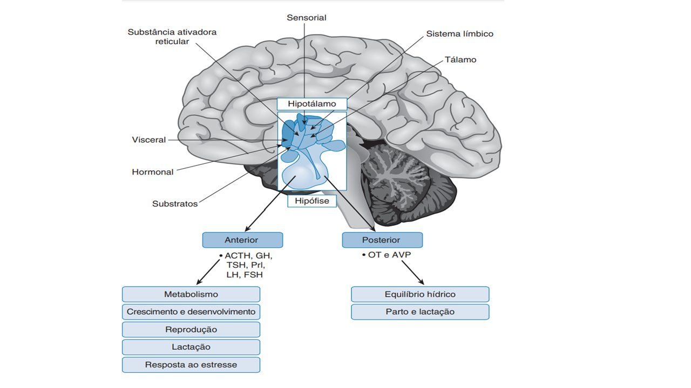

O hipotálamo é uma estrutura do diencéfalo que desempenha papel central na regulação neuroendócrina da homeostasia.
De fato, ao mesmo tempo que ele recebe sinais oriundos das mais diversas regiões do SNC, ele controla de forma indireta a maior parte das glândulas endócrinas.
A figura abaixo mostra o resultado disso: o hipotálamo como um grande centro integrador, que regula muitos dos hormônios de acordo com a integração dos sinais que ele recebe, sejam estes provenientes do meio externo ou interno.

ACTH: hormônio adrenocorticotrófico (ou corticotrofina)
AVP: arginina vasopressina (ou ADH)
FSH: hormônio folículo-estimulante
GH: hormônio do crescimento (ou somatotrofina)
LH: hormônio luteinizante
TSH: hormônio tireoestimulante (ou tireotrofina)
OT: ocitocina
Prl: prolactina
Uma união de corpos de neurônios localizada no SNC é chamada de núcleo.
Assim, os núcleos hipotalâmicos nada mais são do que neurônios que se organizam em grupos (aglomerados).
Dois tipos de neurônios são especialmente importantes no que diz respeito à função endócrina do hipotálamo: os magnocelulares e os parvicelulares (ou parvocelulares).
Localizam-se predominantemente nos núcleos paraventricular e supraóptico.
Os axônios desses neurônios terminam na neuro-hipófise, como será discutido adiante.
Os axônios desses neurônios terminam na eminência média, onde está localizada a primeira rede de capilares do sistema porta hipotálamo-hipófise, como também será discutido adiante.
Referências Bibliográficas
DRAKE, Richard L.; VOGL, A. Wayne; MITCHEL, Adam W. M.: Gray’s anatomia clínica para estudantes. 3 ed. Rio de Janeiro: Elsevier, 2015.
HALL, John Edward; GUYTON, Arthur C. Guyton & Hall tratado de fisiologia médica. 13 ed. Rio de Janeiro: Elsevier, 2017.
NETTER: Frank H. Netter Atlas De Anatomia Humana. 5 ed. Rio de Janeiro, Elsevier, 2011.
MOORE: Keith L. Anatomia orientada para a clínica. 7 ed. Rio de Janeiro: Guanabara Koogan, 2014.
SOBOTTA: Sobotta J. Atlas de Anatomia Humana. 21 ed. Rio de Janeiro: Guanabara Koogan, 2000.
TORTORA, Gerard. J.; DERRICKSON, Bryan. Princípios de Anatomia e fisiologia. 14. ed. Rio de Janeiro: Guanabara Koogan, 2016.